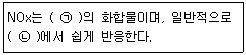
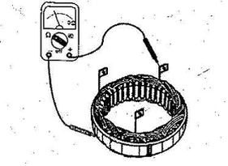

자동차정비기능사 (2014-10-11 기출문제)
1과목: 자동차공학
1. 베어링이 하우징 내에서 움직이지 않게 하기 위하여 베어링의 바깥 둘레를 하우징의 둘레보다 조금 크게 하여 차이를 두는 것은?
- 베어링 크러시
- 베어링 스프레드
- 베어링 돌기
- 베어링 어셈블리
(정답률: 63%)

2. 디젤 연료분사 펌프의 플런저가 하사점에서 플런저 배럴의 흡·배기 구멍을 닫기까지 즉, 송출 직전까지의 행정은?
- 예비행정
- 유효행정
- 변행정
- 정행정
(정답률: 68%)
3. 단위에 대한 설명으로 옳은 것은?
- 1 ps는 75kgf·m/h의 일률이다.
- 1 J은 0.24cal이다.
- 1 kW는 1000kgf·m/s의 일률이다.
- 초속 1m/s는 시속 36km/h와 같다.
(정답률: 55%)
4. 센서 및 액추에이터 점검·정비 시 적절한 점검 조건이 잘못 짝지어진 것은?
- AFS –시동상태
- 컨트롤 릴레이 –점화 스위치 ON 상태
- 점화코일 –주행 중 감속 상태
- 크랭크각 센서 –크랭킹 상태
(정답률: 76%)
5. 압축압력 시험에서 압축압력이 떨어지는 요인으로 가장 거리가 먼 것은?
- 헤드 가스켓 소손
- 피스톤링 마모
- 밸브시트 마모
- 밸브 가이드고무 마모
(정답률: 65%)
6. 기관의 윤활장치를 점검해야 하는 이유로 거리가 먼 것은?
- 윤활유 소비가 많다.
- 유압이 높다.
- 유압이 낮다.
- 오일 교환을 자주한다.
(정답률: 83%)
7. 기관에서 공기 과잉률이란?
- 이론공연비
- 실제공연비
- 공기흡입량 ÷ 연료소비량
- 실제공연비 ÷ 이론공연비
(정답률: 72%)
8. 밸브 오버랩에 대한 설명으로 옳은 것은?
- 밸브 스프링을 이중으로 사용 하는 것
- 밸브 시트와 면의 접촉 면적
- 흡·배기 밸브가 동시에 열려 있는 상태
- 로커 암에 의해 밸브가 열리기 시작할 때
(정답률: 86%)
9. 가솔린의 조성 비율(체적)이 이소옥탄 80, 노멀헵탄 20인 경우 옥탄가는?
- 20
- 40
- 60
- 80
(정답률: 79%)
10. 다음 ( )에 들어갈 말로 옳은 것은?

- (ㄱ) 일산화질소와 산소 (ㄴ) 저온
- (ㄱ) 일산화질소와 산소 (ㄴ) 고온
- (ㄱ) 질소와 산소 (ㄴ) 저온
- (ㄱ) 질소와 산소 (ㄴ) 고온
(정답률: 75%)
11. 스프링 정수가 5 kgf/mm의 코일을 1 cm 압축하는데 필요한 힘은?
- 5 kgf
- 10 kgf
- 50 kgf
- 100 kgf
(정답률: 65%)
12. 전자제어 점화장치의 파워TR에서 ECU에 의해 제어되는 단자는?
- 베이스 단자
- 콜렉터 단자
- 이미터 단자
- 접지 단자
(정답률: 55%)
13. 디젤기관에서 분사시기가 빠를 때 나타나는 현상으로 틀린 것은?
- 배기가스의 색이 흑색이다.
- 노크현상이 일어난다.
- 배기가스의 색이 백색이 된다.
- 저속회전이 어려워진다.
(정답률: 72%)
14. 차량총중량이 3.5톤 이상인 화물자동차에 설치되는 후부 안전판의 너비로 옳은 것은?
- 자동차 너비의 60% 이상
- 자동차 너비의 80% 미만
- 자동차 너비의 100% 미만
- 자동차 너비의 120% 이상
(정답률: 65%)
15. 전자제어 가솔린 엔진에서 인젝터의 고장으로 발생될 수 있는 현상으로 가장 거리가 먼 것은?
- 연료소모 증가
- 배출가스 감소
- 가속력 감소
- 공회전 부조
(정답률: 74%)
16. 행정별 피스톤 압축 링의 호흡작용에 대한 내용으로 틀린 것은?
- 흡입 : 피스톤의 홈과 링의 윗면이 접촉하여 홈에 있는 소량의 오일의 침입을 막는다.
- 압축 : 피스톤이 상승하면 링은 아래로 밀리게 되어 위로부터의 혼합기가 아래로 누설되지 않게 한다.
- 동력 : 피스톤의 홈과 링의 윗면이 접촉하여 링의 윗면으로부터 가스가 누설되는 것을 방지한다.
- 배기 : 피스톤이 상승하면 링은 아래로 밀리게 되어 위로부터의 연소가스가 아래로 누설되지 않게 한다.
(정답률: 67%)
17. 아날로그 신호가 출력되는 센서로 틀린 것은?
- 옵티컬 방식의 크랭크각 센서
- 스로틀 포지션 센서
- 흡기온도 센서
- 수온 센서
(정답률: 62%)
18. 가솔린 엔진의 작동 온도가 낮을 때와 혼합비가 희박하여 실화 되는 경우에 증가하는 유해 배출가스는?
- 산소(O2)
- 탄화수소(HC)
- 질소산화물(NOx)
- 이산화탄소(CO2)
(정답률: 63%)
19. 엔진이 작동 중 과열되는 원인으로 틀린 것은?
- 냉각수의 부족
- 라디에이터 코어의 막힘
- 전동 팬 모터 릴레이의 고장
- 수온조절기가 열린 상태로 고장
(정답률: 80%)
20. 4행정 가솔린기관에서 각 실린더에 설치된 밸브가 3-밸브(3-valve)인 경우 옳은 것은?
- 2개의 흡기밸브와 흡기보다 직경이 큰 1개의 배기밸브
- 2개의 흡기밸브와 흡기보다 직경이 작은 1개의 배기밸브
- 2개의 배기밸브와 배기보다 직경이 큰 1개의 흡기밸브
- 2개의 배기밸브와 배기와 직경이 같은 1개의 배기밸브
(정답률: 61%)
2과목: 자동차정비 및 안전기준
21. LPG기관에서 냉각수 온도 스위치의 신호에 의하여 기체 또는 액체 연료를 차단하거나 공급하는 역할을 하는 것은?
- 과류방지 밸브
- 유동 밸브
- 안전 밸브
- 액·기상 솔레노이드 밸브
(정답률: 78%)
22. 176°F는 몇 ℃인가?
- 76
- 80
- 144
- 176
(정답률: 60%)
23. 가솔린연료에서 노크를 일으키기 어려운 성질을 나타내는 수치는?
- 옥탄가
- 점도
- 세탄가
- 베이퍼 록
(정답률: 74%)
24. 조향장치에서 조향기어비가 직진영역에서 크게 되고 조향각이 큰 영역에서 작게 되는 형식은?
- 웜 섹터형
- 웜 롤러형
- 가변 기어비형
- 볼 너트형
(정답률: 66%)
25. 수동변속기 내부에서 싱크로나이저 링의 기능이 작용하는 시기는?
- 변속기 내에서 기어가 빠질 때
- 변속기 내에서 기어가 물릴 때
- 클러치 페달을 밟을 때
- 클러치 페달을 놓을 때
(정답률: 77%)
26. 수동변속기 차량에서 클러치의 구비조건으로 틀린 것은?
- 동력전달이 확실하고 신속할 것
- 방열이 잘 되어 과열되지 않을 것
- 회전부분의 평형이 좋을 것
- 회전 관성이 클 것
(정답률: 85%)
27. 선회 주행 시 자동차가 기울어짐을 방지하는 부품으로 옳은 것은?
- 너클 암
- 섀클
- 타이로드
- 스테빌라이저
(정답률: 76%)
28. 마스터실린더의 내경이 2 cm, 푸시로드에 100kgf의 힘이 작용하면 브레이크 파이프에 작용하는 유압은?
- 약 25 kgf/㎠
- 약 32 kgf/㎠
- 약 50 kgf/㎠
- 약 200 kgf/㎠
(정답률: 35%)
29. 빈번한 브레이크 조작으로 인해 온도가 상승하여 마찰계수 저하로 제동력이 떨어지는 현상은?
- 베이퍼 록 현상
- 페이드 현상
- 피칭 현상
- 시미 현상
(정답률: 65%)
30. 기계식 주차레버를 당기기 시작(0%)하여 완전작동(100%)할 때까지의 범위중 주차가능 범위로 옳은 것은?
- 10~20%
- 15~30%
- 50~70%
- 80~90%
(정답률: 60%)
31. 링 기어 중심에서 구동 피니언을 편심 시킨 것으로 추진축의 높이를 낮게 할 수 있는 종감속 기어는?
- 직선 베벨 기어
- 스파이럴 베벨 기어
- 스퍼 기어
- 하이포이드 기어
(정답률: 75%)
32. 자동변속기의 토크컨버터에서 작동유체의 방향을 변환시키며 토크 증대를 위한 것은?
- 스테이터
- 터빈
- 오일펌프
- 유성기어
(정답률: 57%)
33. 제3의 브레이크(감속 제동장치)로 틀린 것은?
- 엔진 브레이크
- 배기 브레이크
- 와전류 브레이크
- 주차 브레이크
(정답률: 57%)
34. 타이어의 스탠딩 웨이브 현상에 대한 내용으로 옳은 것은?
- 스탠딩 웨이브를 줄이기 위해 고속 주행 시 공기압을 10% 도 줄인다.
- 스탠딩 웨이브가 심하면 타이어 박리현상이 발생할 수 있다.
- 스탠딩 웨이브는 바이어스 타이어보다 레디얼 타이어에서 많이 발생한다.
- 스탠딩 웨이브 현상은 하중과 무관하다.
(정답률: 65%)
35. 우측으로 조향을 하고자 할 때 앞바퀴의 내측 조향각이 45°, 외측 조향각이 42°이고 축간거리는 1.5m, 킹핀과 바퀴 접지면까지 거리가 0.3m일 경우 최소회전반경은?( 단, sin30° = 0.5, sin42° = 0.67, sin45° = 0.71 )
- 약 2.41m
- 약 2.54m
- 약 3.30m
- 약 5.21m
(정답률: 57%)
36. 자동변속기의 제어시스템을 입력과 제어, 출력으로 나누었을 때 출력신호는?
- 차속센서
- 유온센서
- 펄스 제너레이터
- 변속제어 솔레노이드
(정답률: 50%)
37. 차륜 정렬 측정 및 조정을 해야 할 이유와 거리가 먼 것은?
- 브레이크의 제동력이 약할 때
- 현가장치를 분해·조립했을 때
- 핸들이 흔들리거나 조작이 불량할 때
- 충돌 사고로 인해 차체에 변형이 생겼을 때
(정답률: 68%)
38. 전자제어 제동 시스템(ABS)을 입력, 제어 출력으로 나누었을 때 입력이 아닌 것은?
- 스피드 센서
- 모터릴레이
- 브레이크 스위치
- 축전지 전원
(정답률: 43%)
39. 조향장치의 동력전달 순서로 옳은 것은?
- 핸들 –타이로드 –조향기어 박스 –피트먼 암
- 핸들 –섹터 축 –조향기어 박스 –피트먼 암
- 핸들 –조향기어 박스 –섹터 축 –피트먼 암
- 핸들 –섹터 축 –조향기어 박스 –타이로드
(정답률: 53%)
40. 기관의 회전수가 2400 rpm이고, 총 감속비가 8 : 1, 타이어 유효반경이 25cm일 때 자동차의 시속은?
- 약 14 km/h
- 약 18 km/h
- 약 21 km/h
- 약 28 km/h
(정답률: 29%)
3과목: 안전관리
41. 납산축전지(battery)의 방전 시 화학반응에 대한 설명으로 틀린 것은?
- 극판의 과산화납은 점점 황산납으로 변한다.
- 극판의 해면상납은 점점 황산납으로 변한다.
- 전해액은 물만 남게 된다.
- 전해액의 비중은 점점 높아진다.
(정답률: 54%)
42. 엔진오일 압력이 일정 이하로 떨어졌을 때 점등되는 경고등은?
- 연료 잔량 경고등
- 주차 브레이크등
- 엔진오일 경고등
- ABS 경고등
(정답률: 84%)
43. 트랜지스터(TR)의 설명으로 틀린 것은?
- 증폭 작용을 한다.
- 스위칭 작용을 한다.
- 아날로그 신호를 디지털 신호로 변환한다.
- 이미터, 베이스, 컬렉터의 리드로 구성되어져 있다.
(정답률: 56%)
44. 현재의 연료 소비율, 평균속도, 항속 가능 거리 등의 정보를 표시하는 시스템으로 옳은 것은?
- 종합 경보 시스템(ETACS 또는 ETWIS)
- 엔진·변속기 통합제어 시스템(ECM)
- 자동주차 시스템(APS)
- 트립(Trip) 정보 시스템)
(정답률: 67%)
45. 발전기 스테이터 코일의 시험 중 그림은 어떤 시험인가?

- 코일과 철심의 절연시험
- 코일의 단선시험
- 코일과 브러시의 단락시험
- 코일과 철심의 전압시험
(정답률: 56%)
46. 점화코일의 1차 저항을 측정할 때 사용하는 측정기로 옳은 것은?
- 진공 시험기
- 압축압력 시험기
- 회로 시험기
- 축전지 용량 시험기
(정답률: 60%)
47. 전자제어 방식의 뒷 유리 열선제어에 대한 설명으로 틀린 것은?
- 엔진 시동상태에서만 작동한다.
- 열선은 병렬회로로 연결되어 있다.
- 정확한 제어를 위해 릴레이를 사용하지 않는다.
- 일정시간 작동 후 자동으로 OFF 된다.
(정답률: 64%)
48. 디젤 승용자동차의 시동장치 회로 구성요소로 틀린 것은?
- 축전지
- 기동전동기
- 점화코일
- 예열·시동스위치
(정답률: 61%)
49. PNP형 트랜지스터의 순방향 전류는 어떤 방향으로 흐르는가?
- 컬렉터에서 베이스로
- 이미터에서 베이스로
- 베이스에서 이미터로
- 베이스에서 컬렉터로
(정답률: 52%)
50. 축전지의 극판이 영구 황산납으로 변하는 원인으로 틀린 것은?
- 전해액이 모두 증발되었다.
- 방전된 상태로 장기간 방치하였다.
- 극판이 전해액에 담겨있다.
- 전해액의 비중이 너무 높은 상태로 관리하였다.
(정답률: 53%)
51. 산업안전보건법 상 작업현장 안전·보건표지 색채에서 화학물질 취급장소에서의 유해·위험 경고 용도로 사용되는 색채는?
- 빨간색
- 노란색
- 녹색
- 검은색
(정답률: 63%)
52. 정 작업 시 주의할 사항으로 틀린 것은?
- 정 작업 시에는 보호안경을 사용 할 것
- 철재를 절단할 때는 철편이 튀는 방향에 주의할 것
- 자르기 시작할 때와 끝날 무렵에는 세게 칠 것
- 담금질 된 재료는 깎아내지 말 것
(정답률: 86%)
53. 정비용 기계의 검사, 유지, 수리에 대한 내용으로 틀린 것은?
- 동력기계의 급유 시에는 서행한다.
- 동력기계의 이동장치에는 동력 차단장치를 설치한다.
- 동력 차단장치는 작업자 가까이에 설치한다.
- 청소할 때는 운전을 정지한다.
(정답률: 76%)
54. 공기압축기에서 공기필터의 교환 작업 시 주의사항으로 틀린 것은?
- 공기압축기를 정지시킨 후 작업한다.
- 고정된 볼트를 풀고 뚜껑을 열어 먼지를 제거한다.
- 필터는 깨끗이 닦거나 압축공기로 이물을 제거한다.
- 필터에 약간의 기름칠을 하여 조립한다.
(정답률: 83%)
55. 안전사고율 중 도수율(빈도율)을 나타내는 표현식은?
- (연간 사상자수/평균 근로자 수)*1000
- (사고 건수/연근로 시간 수)*1000000
- (노동 손실일수/노동 총시간 수)*1000
- (사고 건수/노동 총시간 수)*1000
(정답률: 51%)
56. 브레이크에 페이드 현상이 일어났을 때 운전자가 취할 응급처치로 가장 옳은 것은?
- 자동차의 속도를 조금 올려준다.
- 자동차를 세우고 열이 식도록 한다.
- 브레이크를 자주 밟아 열을 발생 시킨다.
- 주차 브레이크를 대신 사용한다.
(정답률: 80%)
57. 전동공구 사용 시 전원이 차단되었을 경우 안전한 조치방법은?
- 전기가 다시 들어오는지 확인하기 위해 전동공구를 ON상태로 둔다.
- 전기가 다시 들어올 때까지 전동공구의 ON-OFF를 계속 반복한다.
- 전동공구 스위치는 OFF상태로 전환한다.
- 전동공구는 플러그를 연결하고 스위치는 ON상태로 하여 대피한다.
(정답률: 84%)
58. 가솔린기관의 진공도 측정 시 안전에 관한 내용으로 적합하지 않은 것은?
- 기관의 벨트에 손이나 옷자락이 닿지 않도록 주의한다.
- 작업 시 주차브레이크를 걸고 고임목을 괴어둔다.
- 리프트를 눈높이까지 올린 후 점검한다.
- 화재 위험이 있을 수 있으니 소화기를 준비한다.
(정답률: 78%)
59. 축전지를 차에 설치한 채 급속충전을 할 때의 주의사항으로 틀린 것은?
- 축전지 각 셀(cell)의 플러그를 열어 놓는다.
- 전해액 온도가 45℃를 넘지 않도록 한다.
- 축전지 가까이에서 불꽃이 튀지 않도록 한다.
- 축전지의 양(+, -)케이블을 단단히 고정하고 충전한다.
(정답률: 53%)
60. 운반 기계에 대한 안전수칙으로 틀린 것은?
- 무거운 물건을 운반할 경우에는 반드시 경종을 울린다.
- 흔들리는 화물은 사람이 승차하여 붙잡도록 한다.
- 기중기는 규정 용량을 초과하지 않는다.
- 무거운 물건을 상승시킨 채 오랫동안 방치하지 않는다.
(정답률: 85%)